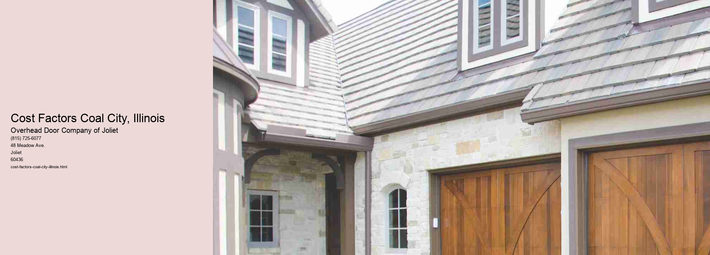

Understanding the Cost Factors in Coal City, Illinois
Introduction
Coal City, Illinois, is a small town with a rich history rooted in the coal mining industry.
Economic Diversification
One of the primary cost factors in Coal City is the economic transition from a coal-dependent economy to a more diversified one. As coal mining has declined, the town has sought to attract new industries and businesses. This diversification has required investment in infrastructure, education, and workforce development. The costs associated with these investments are significant but necessary to ensure the long-term sustainability of the local economy.
Infrastructure Development
To support economic diversification, Coal City has invested in infrastructure development.
Education and Workforce Development
As Coal City transitions to a more diverse economy, education and workforce development have become critical cost factors. The town must prepare its residents for new job opportunities, which often require different skills than those needed in the coal industry. Investment in education, vocational training, and workforce development programs is essential to ensure that residents can compete in the evolving job market. These investments, while costly, are vital for the economic future of the town.
Housing Costs
Housing costs in Coal City are another significant factor affecting residents. As the town attracts new businesses and residents, the demand for housing increases.
Environmental Considerations
Environmental considerations also play a role in the cost factors affecting Coal City. As the town moves away from coal and embraces more sustainable practices, there are costs associated with environmental remediation and adopting green technologies. Balancing economic growth with environmental sustainability requires careful planning and financial investment.
Conclusion
Coal City, Illinois, is a town in transition, facing a complex array of cost factors as it moves towards a more diversified economy. Infrastructure development, education and workforce training, housing costs, and environmental considerations all contribute to the economic landscape of the area. For Coal City to thrive, it is crucial that local leaders, businesses, and residents work together to address these cost factors effectively. By investing in the towns future and embracing change, Coal City can ensure a prosperous and sustainable future for its community.
Types of Garage Doors Aurora, Illinois